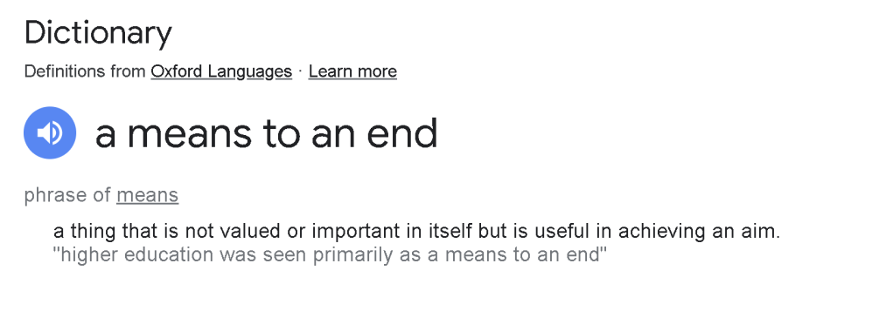

Virtue

Understanding "A Means to an End"
In our daily conversations, we often encounter phrases that encapsulate complex ideas in just a few words. One such phrase is "a means to an end." But what does it really mean? Let's delve into this concept and understand its implications in various aspects of life.
Definition and Explanation
According to Oxford Languages, the phrase "a means to an end" refers to "a thing that is not valued or important in itself but is useful in achieving an aim." Essentially, it signifies that certain actions, processes, or tools are undertaken not for their own sake, but to achieve a larger goal. For instance, consider the example provided in the definition: "higher education was seen primarily as a means to an end." Here, higher education is not valued solely for the knowledge it imparts, but rather for the opportunities and achievements it can facilitate, such as a successful career.
Historical Context
The concept of using something as "a means to an end" has roots in philosophical discourse. The German philosopher Immanuel Kant famously discussed the idea in his moral philosophy. Kant argued that humans should never be treated merely as means to an end, but always as ends in themselves. This ethical stance emphasizes the inherent value of individuals, cautioning against using people solely as tools to achieve one's own goals.
Practical Applications
-
Education: As highlighted in the definition, education is often viewed as a means to an end. Students pursue degrees not just for the sake of learning, but to secure better job prospects, improve their social standing, or fulfill personal ambitions.
-
Work: Many people work jobs that they may not be passionate about, but they do so to earn a livelihood, support their families, or save for future aspirations. The job itself is a means to achieve these larger life goals.
-
Health and Fitness: Engaging in regular exercise and maintaining a healthy diet can be seen as a means to an end. The ultimate goal is not just to be fit, but to lead a longer, healthier, and more fulfilling life.
Ethical Considerations
While viewing certain actions as a means to an end can be practical, it also raises ethical questions. For instance, in the corporate world, treating employees merely as tools to increase profit can lead to exploitation and unethical practices. It's crucial to balance the means with the respect and dignity of individuals involved.
Conclusion
Understanding "a means to an end" helps us recognize the motivations behind our actions and decisions. It encourages us to reflect on the ultimate goals we are striving for and to ensure that in our pursuit of these goals, we do not lose sight of the value of the means themselves. Whether in education, work, or personal life, acknowledging this concept can lead to more thoughtful and ethical decision-making.
Virtue as a Means to an End: A Philosophical Perspective
In the realm of ethics and philosophy, the concept of virtue has always held a significant place. Virtue, often defined as moral excellence, encompasses qualities such as honesty, courage, compassion, and integrity. But can virtue itself be seen as a means to an end? Let’s explore this idea with a concrete example.
Virtue and the Greater Good
Imagine a community leader, Jane, who embodies the virtue of honesty. She is well-known for her transparency and truthfulness, both in her personal interactions and professional dealings. For Jane, honesty is not just a personal value; it serves a greater purpose.
Example: Honesty as a Means to Building Trust
-
The Situation: Jane is leading a local initiative to improve public health in her community. The project requires the collaboration of various stakeholders, including residents, healthcare providers, and local government officials. However, previous attempts to implement similar initiatives have failed due to a lack of trust among these groups.
-
Virtue in Action: Jane leverages her reputation for honesty to build trust. She ensures that all communications are transparent, openly shares progress and setbacks, and encourages feedback from all parties involved. Her consistent honesty helps in creating an environment where everyone feels heard and valued.
-
The End Goal: The ultimate aim of Jane’s project is to improve public health outcomes. By fostering trust through her virtue of honesty, she is able to unite the stakeholders, secure the necessary resources, and ensure that the initiative is implemented effectively.
-
The Outcome: As a result of Jane’s honest approach, the project gains widespread support and successfully achieves its goals, leading to better health services and improved well-being for the community.
Analysis
In this example, honesty is the virtue that Jane practices consistently. However, it also serves as a means to an end—the end being the successful implementation of a public health initiative. Jane’s honesty helps to build the necessary trust and cooperation among stakeholders, which are crucial for the project's success.
This scenario illustrates that virtues can indeed be seen as means to an end. Practicing virtue not only upholds moral integrity but also facilitates the achievement of broader, often communal, goals. It emphasizes that while virtues are valuable in their own right, they also play a crucial role in attaining positive outcomes and fostering the greater good.
Ethical Considerations
While using virtue as a means to an end, it’s important to ensure that the virtue itself is not compromised. For instance, if Jane were to use honesty selectively, only when it benefits the project, it would undermine the very virtue she aims to uphold. Therefore, the integrity of the virtue must be maintained consistently.
Conclusion
Virtue as a means to an end is a powerful concept, particularly in leadership and community building. By practicing virtues like honesty, individuals can create environments that facilitate trust, cooperation, and the achievement of common goals. This approach not only leads to successful outcomes but also promotes a culture of moral integrity and ethical behavior.
Imported from rifaterdemsahin.com · 2024